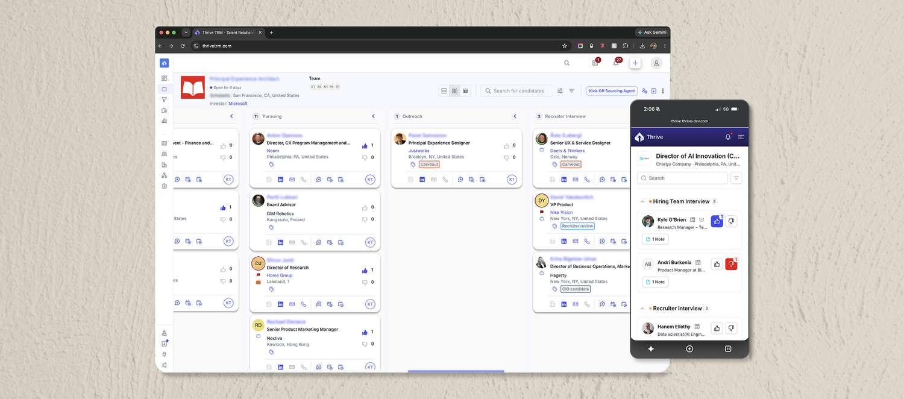

Projects: one search, many people
The multi-step search workflow at the centre of a recruiting platform, from strategy and sourcing to a kanban pipeline. I led the design for recruiters, researchers and hiring teams, plus a client portal that shows hiring teams the same search with only the actions they need.
- 2,000+
- hiring-team users on the client portal within five months